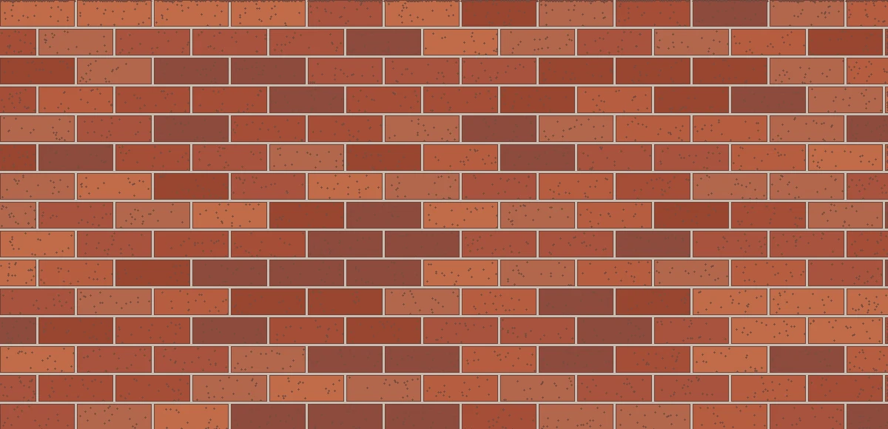
Rococho 20 cm × 7 cm
20 cm de largo × 7 cm de alto visible. Colocación a soga con juntas ilustrativas.
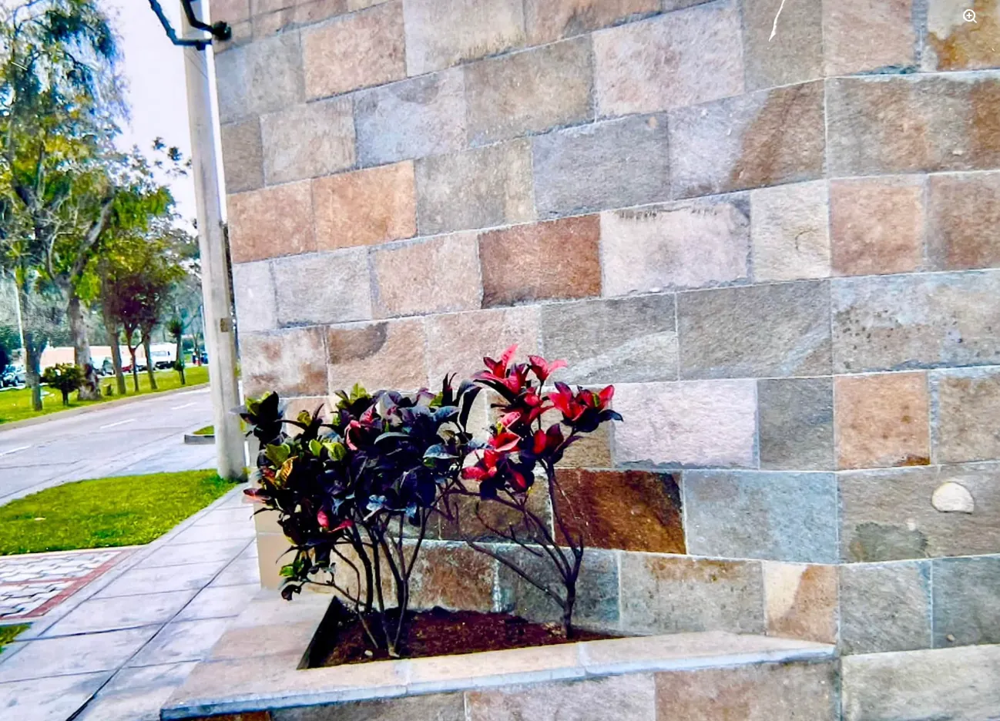
Laja ayacuchana, talamolle y rococho para fachadas, muros y espacios con piedra natural y rococho.
01 / NUESTRA ESENCIA
En QR Piedras Naturales nos especializamos en la comercialización de piedra laja y ladrillo rococho. Ofrecemos alternativas de textura, color y formato para proyectos residenciales, comerciales y exteriores.
Hablemos de tu proyecto ↗02 / NUESTROS MATERIALES
Fotografías reales de los materiales y acabados que nos compartiste.
03 / CATÁLOGO FOTOGRÁFICO
Selecciona un material para ver sus fotografías y solicitar información.
Rococho: medidas máximas de referencia 20 cm × 7 cm y 20 cm × 8 cm (largo × alto visible); se pueden obtener cortes menores. Espesor y disponibilidad por confirmar. Las fotografías reales no son dibujos a escala.
FORMATOS REALES / ROCOCHO
Patrones a escala proporcional del frente visible de cada pieza. Las fotografías de obras se conservan sin modificar.

20 cm de largo × 7 cm de alto visible. Colocación a soga con juntas ilustrativas.
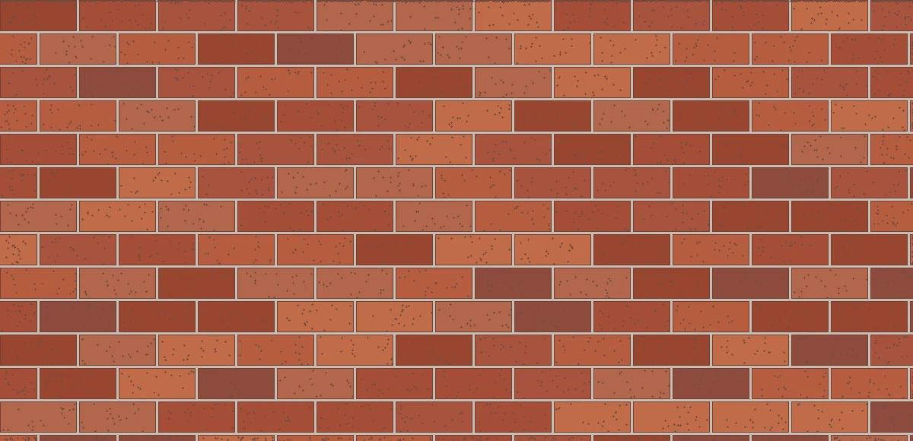
20 cm de largo × 8 cm de alto visible. Formato máximo de referencia.
También pueden obtenerse piezas de menor tamaño mediante corte. Los diagramas son ilustraciones proporcionales del frente del rococho; no representan espesores, juntas reales ni una ficha de instalación. Consultar medidas y stock.
04 / FOTOGRAFÍAS REALES
Galería ampliada con fotografías de material en stock, revestimientos, piedra ornamental, cascadas y jardines. Tonalidades y formatos sujetos a disponibilidad.
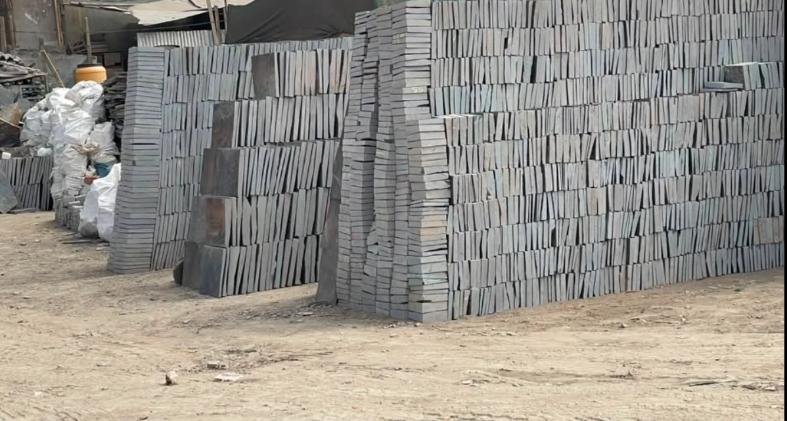
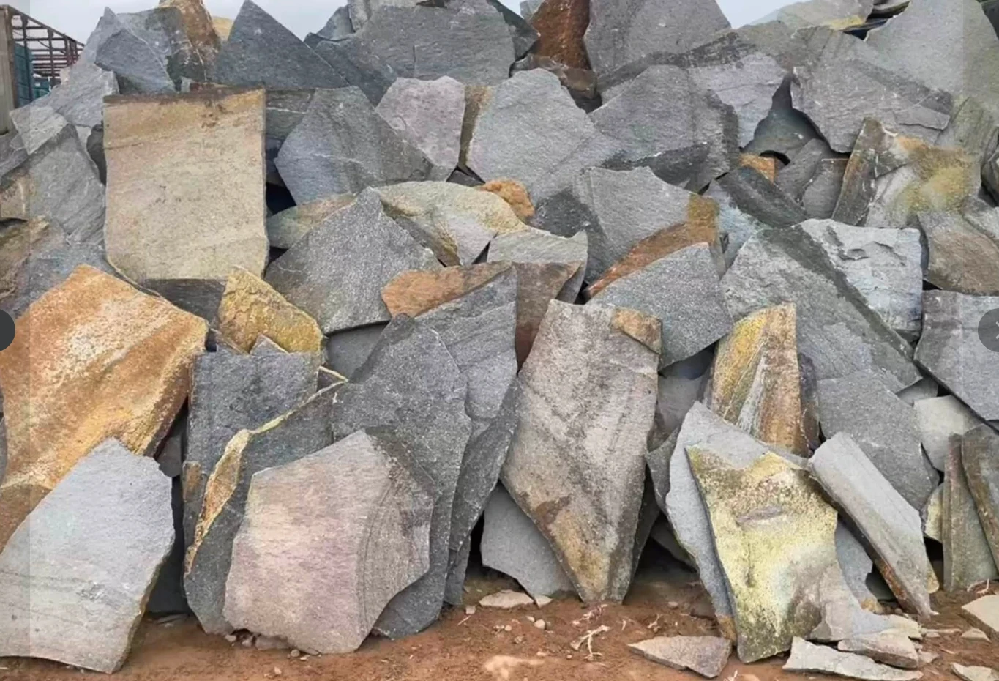
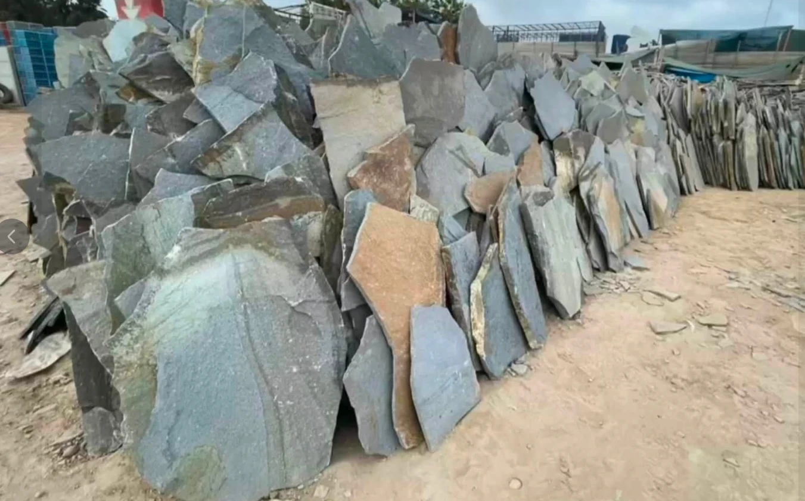
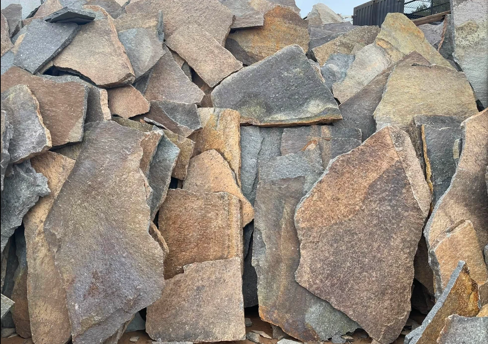
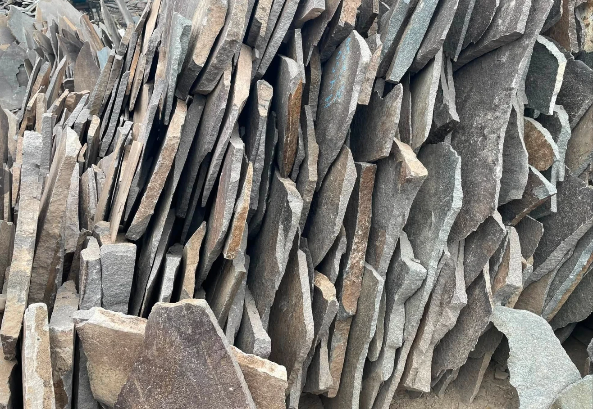
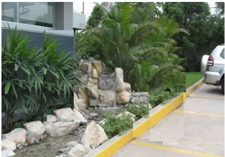
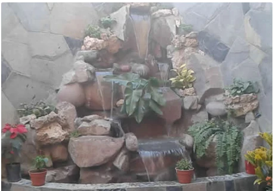
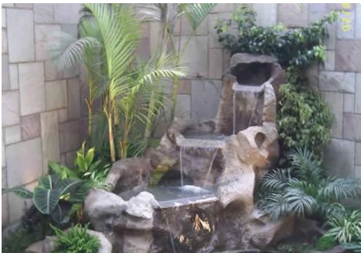
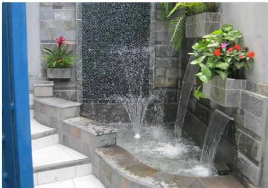
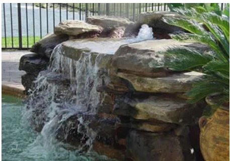
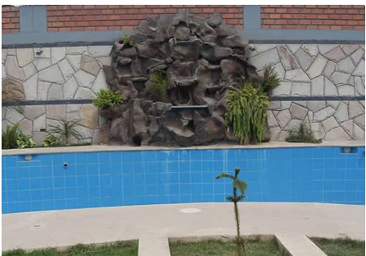
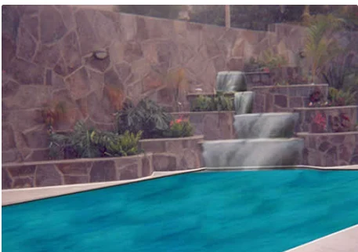
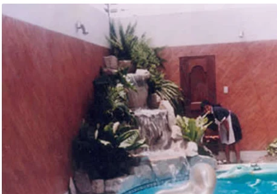
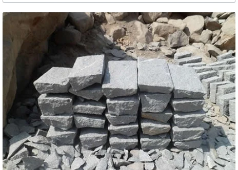
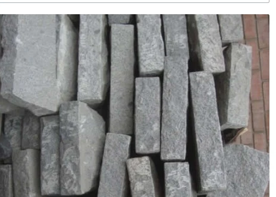
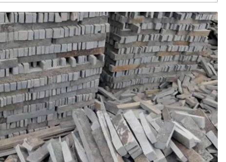
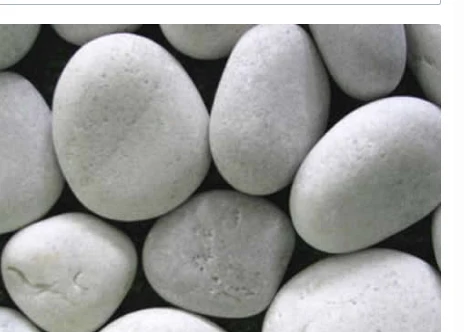
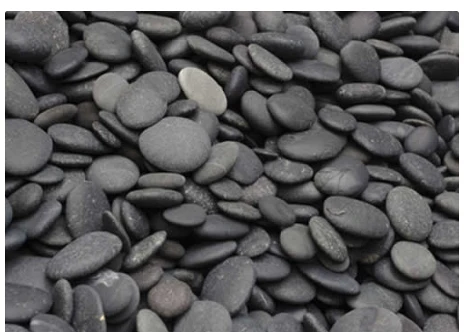
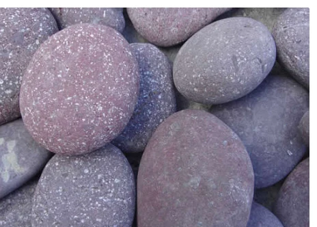
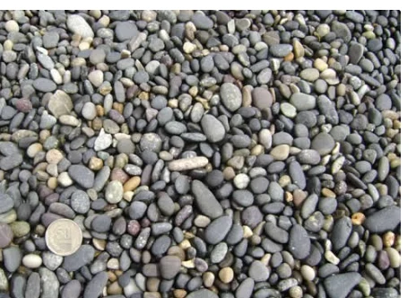
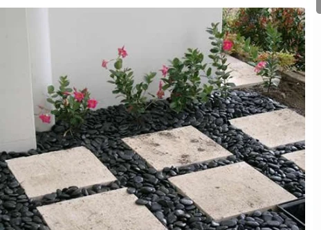
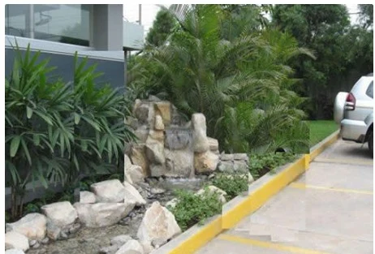
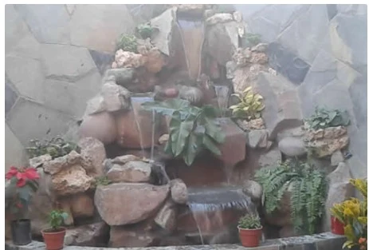
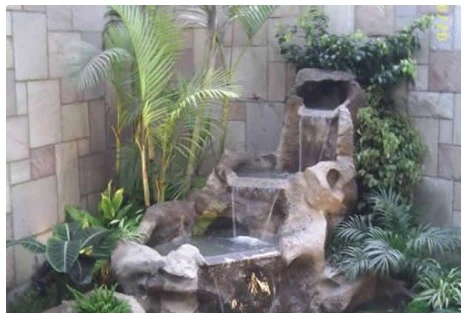
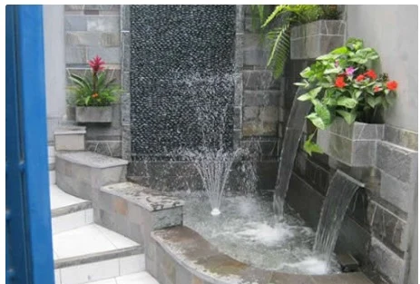
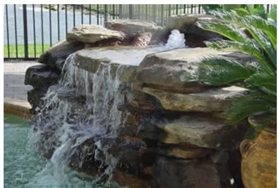
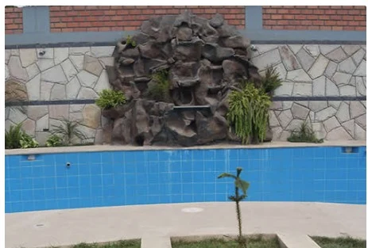
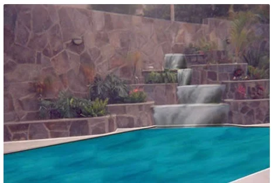
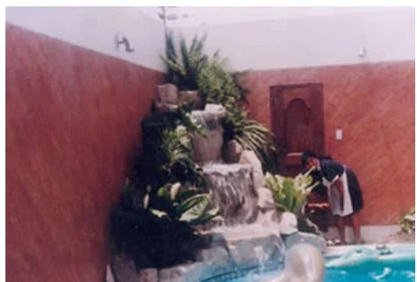
CATÁLOGO DE REVESTIMIENTOS · EDICIÓN COMERCIAL
Explora laja ayacuchana, laja talamolle y ladrillo rococho, con formatos de rococho 20 cm × 7 cm y 20 cm × 8 cm y ejemplos visuales de aplicación. Descarga el catálogo arquitectónico fusionado y compártelo con arquitectos, diseñadores y clientes.
Las aplicaciones ilustrativas son referenciales. Consulta formatos y disponibilidad por WhatsApp.
↓ Descargar catálogo PDFVer catálogo en otra pestaña ↗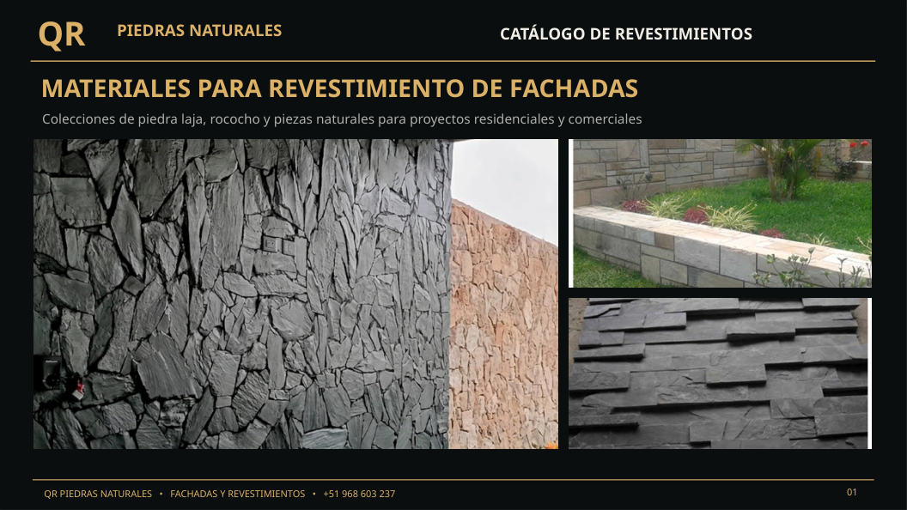
04 / IDEAS PARA TU PROYECTO
Aplicaciones fotografiadas en muros, fachadas y ambientes. Las imágenes son referencias visuales, no servicios de instalación.
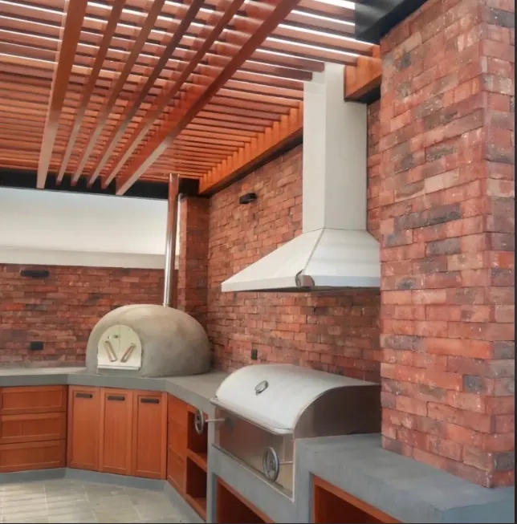
05 / CONTACTO
¿Necesitas laja ayacuchana, talamolle o rococho? Envíanos tu consulta y te ayudaremos a cotizar.